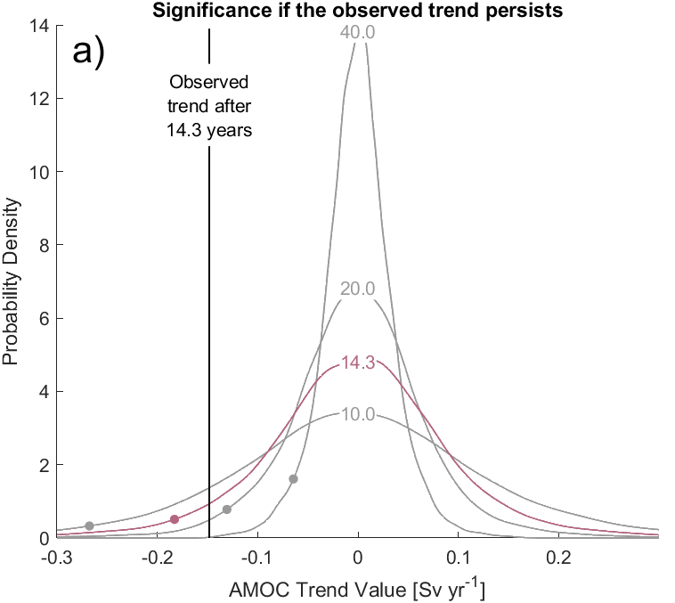

Understanding the AMOC
Atlantic Meridional Overturning Circulation
Environments: MATLAB, Tableau
Skills: Data cleaning and transformation, trend detection, spectral analysis, signal filtering
Introduction
The Atlantic Meridional Overturning Circulation (AMOC) is a current in the Atlantic Ocean running northwards and the surface and soutwards at depth, and has large influences on world climate, for example the amount of sea ice in the Arctic and the frequency and intensity of hurricanes in the Atlantic. As such, it is vital to know whether its strength is increasing or decreasing, and to that end an observational mooring array has been set up at 26N in the Atlantic, and has been monitoring its strength since 2004, with data available to 2018.
 The resulting timeseries has a non-zero trend, but the question is: is this trend a significant departure from its normal behaviour? The strength of the AMOC (and almost all climate variables) does not stay constant, but instead varies with time. We assess whether the trend seen in the AMOC observations is part of this "natural variability", or something more significant by comparing with pre-industrial climate scenarios, i.e. where there is only natural variability. We test whether these simulations accurately represent natural variability, and then use them to assess the significance of the observed trend.